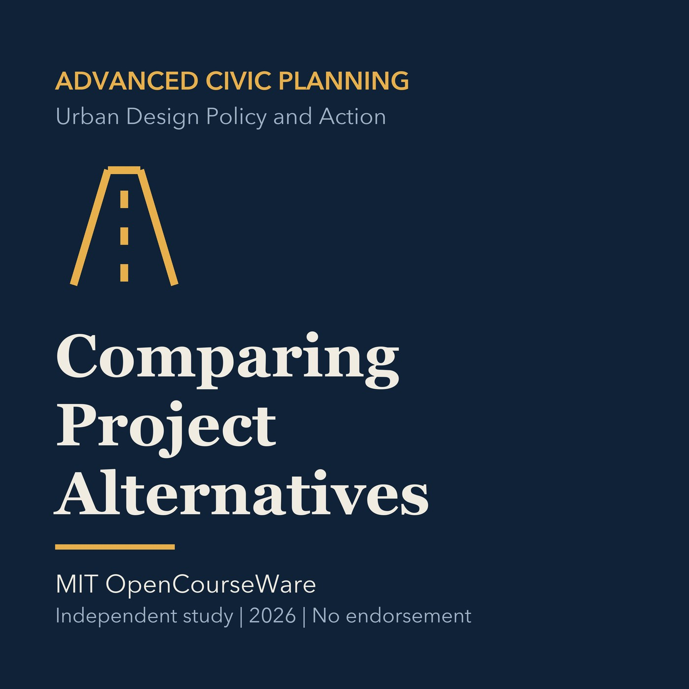

EPISODE 33
Comparing Project Alternatives
Uses consistent baselines, lifecycle costs, uncertainty, and public outcomes to compare alternatives.

- Stable GUID
65a2a06a-6268-5d50-96d4-40702eb8ee00- Release
- advanced-civic-planning-v2026.2
- SHA-256
62d99e0f3d2f0a2efcde3d0fb68b1b02d92e11eee1bc084730a000188a443e75